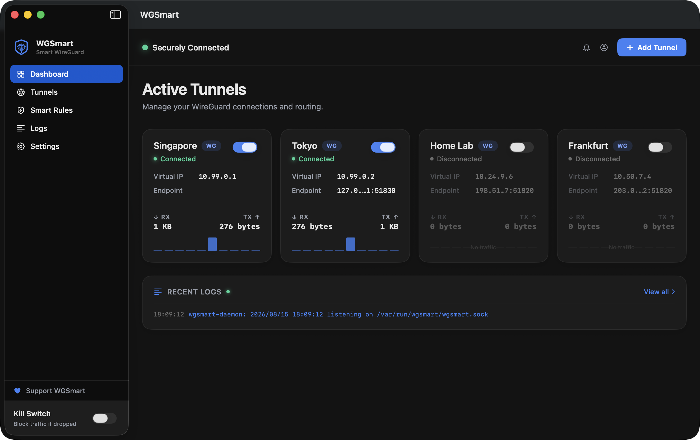
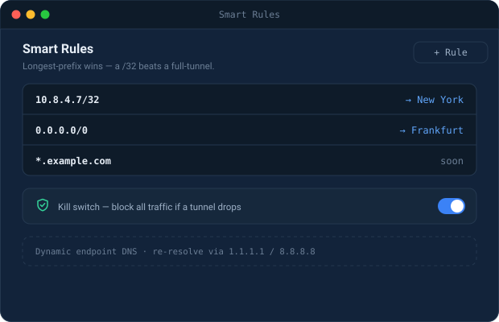
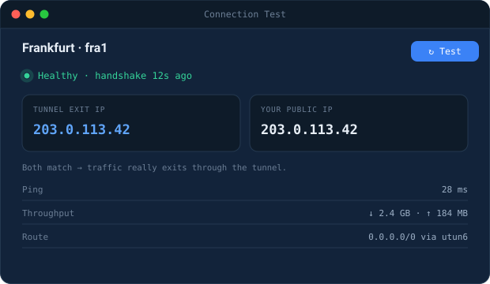
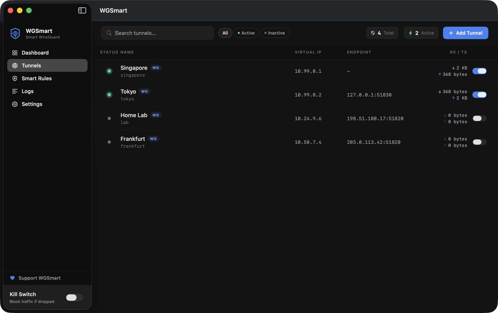
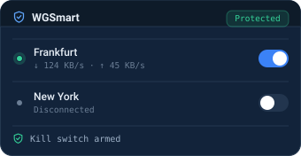

WireGuard · macOS
The official WireGuard client runs one tunnel at a time. WGSmart runs all of them — and sends each destination down the tunnel you pick.
WireGuard · macOS
App WireGuard chính thức chỉ chạy được một tunnel tại một thời điểm. WGSmart chạy tất cả — và đẩy từng đích đến qua đúng tunnel bạn chọn.
WireGuard · macOS
官方 WireGuard 客户端一次只能运行一条隧道。WGSmart 让它们全部运行——并把每个目标地址送进你指定的那一条。
Longest prefix wins: a /32 route beats a full tunnel, so one host can leave through a different exit than everything else.
Three steps. You already have the configs.
Drop in a .conf, scan a QR, or type it by hand. Overlapping ranges and a second full-tunnel get flagged right there.
Pin an address or a range to a specific tunnel. Longest prefix wins, so one host can leave through a different exit than everything else.
Every tunnel up in parallel, with a kill switch that fails closed and a test that proves traffic really leaves where you said.
Why it exists
Two servers, two configs, both needed at the same time — and a client that could only hold one. The workaround was editing AllowedIPs by hand and restarting tunnels all day. WGSmart is what replaced that.
It is not a VPN service. There are no servers to subscribe to and nothing to sign up for — you bring your own WireGuard configs, and WGSmart is the thing that makes them behave.
Used every day on macOS by the person who wrote it.
Each with its own AllowedIPs, connected in parallel rather than one-at-a-time.
Pin an IP or CIDR to a specific tunnel. Longest prefix wins, so a /32 overrides a full tunnel.
Built on pf. It snapshots your existing firewall rules and restores them on the way out, instead of trampling them.
Overlapping ranges and a second full-tunnel config get flagged before they break your routing.
One click reports handshake age, round-trip, and the tunnel's exit IP next to your real public IP. A second check verifies each route against the kernel.
Hostname endpoints are re-resolved when they change, so a server on a dynamic address does not strand the tunnel.
Streamed straight from the engine, filterable, exportable. When something breaks you can see why.
Throughput and handshake age at a glance; the full window when you need to change something.
Every action in the app is also one command, over the same interface. Scriptable, JSON output.
Author a server profile and its client configs, generate keys on-device, hand them out as files or QR codes.
Every release carries a SHA-256 and an Ed25519 signature, checked by the app and then independently again by the privileged service before anything installs.
Dark and light both ship; the app follows your system setting.





These are written, tested in isolation, and shipping in the build — but they have not been run long enough on real machines for anyone to promise they work. They are listed here rather than sold to you.
Resolves a domain and pins the addresses it returns. Best-effort by nature: apps using DoH/DoT or hard-coded IPs slip past it, and large CDNs return pools that shift. It is a routing convenience, not a security control.
On macOS this matches the user a process runs as — not the individual app. Genuine per-app routing needs an Apple entitlement WGSmart does not have, so it is deliberately described as per-user here.
Send a port or range down a chosen tunnel, TCP, UDP or both — matching on source or destination.
A local resolver that watches answers to pin routes more accurately. Present but switched off by default, because a resolver that misbehaves takes the whole machine's DNS with it.
Tunnel status at a glance without opening anything. Read-only — it shows state, it does not toggle tunnels.
The Linux hub is downloadable and installs in one line; its packaging is verified end to end. What is unproven is the VPN itself — no tunnel has moved traffic on real hardware. Windows compiles and its tests pass, and nothing more; it is not offered as a download.
One installer. It places the app in Applications and installs the privileged service the tunnels need — WireGuard on macOS cannot route without one.
Requires macOS 15 or later · Apple Silicon and Intel · about 19 MB
WGSmart is not yet notarized by Apple. Notarization requires a paid Apple Developer membership, which this project does not have yet — so on first launch macOS will say the developer cannot be verified. That warning is accurate: Apple has not checked this build.
To open it anyway: right-click the app and choose Open, then confirm once. You should not have to do this for a second time, or for later updates.
If that trade is not one you want to make for a tool that runs with system privileges, that is a completely reasonable call — wait for the notarized build. It is the next thing being funded.
The checksum is published here, on a different host than the file itself. If someone tampered with the download, these will not match.
# compare against the value published on this page shasum -a 256 WGSmart-1.0.0.pkg …published with the release…
The in-app updater goes further: it checks the checksum and an Ed25519 signature, and the privileged service re-checks both itself before installing anything. The signing key has never been on GitHub, so a compromised account still cannot produce an update WGSmart will accept.
A different product from the Mac app: no GUI, no client. It turns a server into a WireGuard hub, under systemd, with an optional browser UI. amd64 and arm64.
curl -fsSL https://wgsmart.base101.app/installer.sh | sh
On Debian and Ubuntu it configures the signed APT repository and lets apt install and keep verifying it. Everywhere else it downloads the signed tarball named by the signed update manifest and checks its Ed25519 signature before extracting anything. If it cannot verify a download, it stops.
It installs a service that runs as root, so reading it first is the better habit: curl -fsSL https://wgsmart.base101.app/installer.sh -o installer.sh, read it, then sh installer.sh. Add sh -s -- --with-web for the browser UI, or --dry-run to see what it would do and change nothing.
The packaging is verified; the VPN is not. Installing, upgrading and the browser UI were tested end to end on a real systemd system. No tunnel has carried traffic on real hardware — every nft, ip and cgroup call is covered only by unit tests. Use a server you can afford to break.
| Item | Status | Detail |
|---|---|---|
| Apple notarization | next | Removes the first-launch warning entirely. Waiting on the membership fee — see below. |
| Linux server edition | in testing | Headless service plus a browser UI, for running the hub on a VPS. Installs in one line and the packaging is verified; the routing itself has not been proven on real hardware. |
| Windows | later | The engine compiles for it. Routing by user and by port have no equivalent mechanism there yet, and the app fails those calls honestly rather than pretending. |
| iOS | not planned | Apple's networking framework allows one active tunnel at a time, which removes the entire reason WGSmart exists. |
| Mac App Store | not possible | The privileged service and firewall access the app depends on are not allowed inside the App Store sandbox. |
| Open source | no | WGSmart is free to use, including at work, but the source is not published. Verifiable signed builds are offered in place of readable code. |
WGSmart is free and staying free. If it saved you from juggling configs by hand, a tip keeps it going for everyone. No pressure. 💛
This is the one thing standing between WGSmart and an install with no scary warning. It is a yearly fee, and donations go to it first.
ko-fi.com/nkcoder
Card or PayPal, international
LÝ QUÝ DƯƠNG
9007041118966
Timo · BVBank · napas 247
LÝ QUÝ DƯƠNG
Scan with the MoMo app
Issues and feature requests are tracked in the open on GitHub. Write in English, Vietnamese or Chinese — all three are read.
A short form asks for your version, your macOS, and what happened. The more precisely you can describe the routing you expected, the faster it gets fixed.
Describe the problem you are trying to solve rather than the feature you imagine — it usually leads somewhere better.
Questions and setup help go to Discussions, so issues stay a list of real defects.
Privately, never in a public issue. WGSmart runs a privileged service, so security reports are handled ahead of everything else.
Open a private advisory · wgsmart@solutions101.org
VPN diagnostics carry real addresses — server endpoints, your internal ranges, Wi-Fi network names, sometimes keys. Please remove them first. Nothing you post publicly can be un-posted.